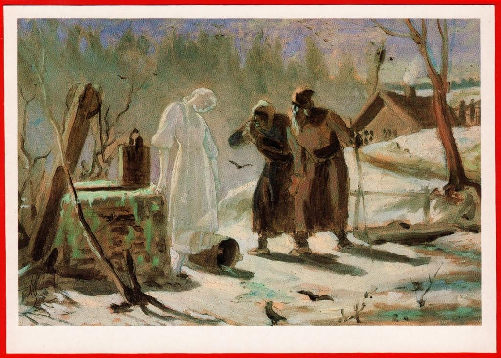

Поиск работ
Фильтры
Последние добавленные работы:

Тающая Снегурочка
Эскиз к образу Снегурочки, который передает атмосферу зимней сказки и волшебства. В работе мастерски соединены элементы реалистичного и символического изображения.

Проводы покойника
Картина изображает траурную сцену, в которой родственники и друзья прощаются с усопшим. Исполнена в эмоциональном ключе, передавая глубину утраты и скорби.

Парижские тряпичники
Картина изображает сцену с торговцами тряпками на парижской улице. Она передает атмосферу жизни и торговли, характерную для Парижа в определённый исторический период..